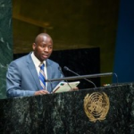
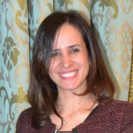
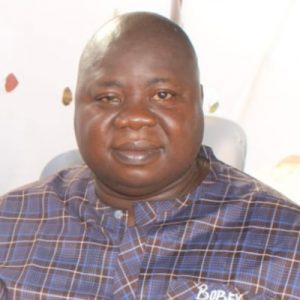

Team
Meet Our Team

CHIBAULA D. SILWAMBA
Lawyer| Diplomat & International Relations| Commissioner for Oaths| Assistant to The Minister| Government Communicator

Fathia Eldakhakhny
Journalist, Media consultant, public speaker, script writer, and trainer.

Dr. Robert Madu
Head, Department of Mass Communications Institute of Management and Technology, Enugu
Amazing Staff
Beryl Achieng-Omondi
Deutsche Welle (DW) TV Correspondent, Nairobi, Kenya
Cyrille Guel - Bourkina
Faso Journalist and Civil Society Leader
Mekki Elmograbi
Sudan-based media practitioner and Diplomat
Honorine Nininahazwe
English Service, Radio Burundi
Jean Baptiste Hategekim
Dean of Journalism and Communication Studies, ICK University, Rwanda
Kene Okafor
Experienced capital markets operator and journalist
Dr. David Monda
Kenyan-born academic and media professional; Faculty, City University of New York
Dr. Natacha Pawa
Cameroon-born academic at the City University of New York
Winny Bakajika
Originally from the Democratic Republic of Congo, DRC, Winny is a journalist based in South Africa
Zainab Okino
Journalist and Chairperson Nigeria-based BluePrint Editorial Board.
Be part of the change
Empower media literacy. Defend press freedom. Support ethical journalism — as a volunteer, donor, or advocate.